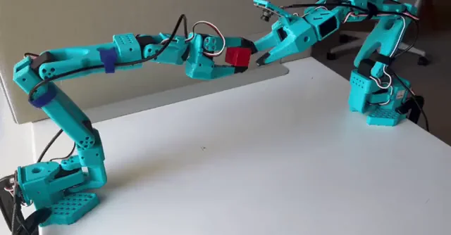

2025 · HUGGING FACE · LEROBOT 生态
SmolVLA 精读
1. 问题：VLA 的资源墙
OpenVLA（7B）、RT-2-X 等验证了开放 VLA 的可行性，但训练要大集群、部署要大显存、依赖昂贵本体——学术实验室与爱好者被挡在门外。SmolVLA 的命题：单张消费级 GPU 可训、CPU/消费 GPU 可部署的 VLA，性能仍要有竞争力。答案分两半：架构上“小而精”，推理调度上“异步”。
2. 架构精读
2.1 SmolVLM2 主干 + 交错注意力动作专家
VLM 主干用 SmolVLM2（SigLIP 视觉编码器 + SmolLM2 语言模型，针对多图输入优化）；动作专家 $v_\theta$ 以 flow matching 目标训练，从 VLM 特征生成动作块 $\mathbf{A}_t = (a_t, ..., a_{t+n})$，n=50。专家的注意力块是交错排列的：cross-attention（读 VLM 特征，金色块）与 causal self-attention（动作 token 之间，浅黄块）交替，让 50 个动作 token 在小参数量下仍充分吃到视觉语义。训练超参：AdamW（$\beta_1=0.9, \beta_2=0.95$），图像统一缩放 512×512（与 VLM 输入口径一致）。

2.2 效率设计与三张消融表
- 视觉 token 削减：压到最少必要量（论文 Visual tokens reduction 节），省掉小模型吃不消的长视觉序列。
- 层跳过（layer skipping）：推理时跳过 VLM 的部分上层。消融关键结论：“500M VLM 跳层”优于“直接换 256M VLM”（Table 8：VLM-256M 平均 75.5，500M 跳层更高）——深度比宽度值钱，跳层是免费的宽度缩减。
- 专家容量消融（Table 9）：专家隐藏宽度 ×0.50 → 平均 80.3，×0.25 → 73.8：容量可以砍，但要留下限。
- 训练目标消融（Table 10）：flow matching 显著优于 L1 回归。
- 状态放哪（States to VLM or Expert?）：状态投影进 VLM 前缀（Prefix + cross-attention，平均 80.3）优于放到专家后缀（73.3）——语义层应该“看到”本体状态。
2.3 数据：社区规模化
预训练完全来自 LeRobot 社区数据集：481 个数据集、22.9K episodes、10.6M 帧——比其他 SOTA 的预训练集小至少一个数量级。配套工作是把社区数据里混乱的相机视角标准化（统一内外参约定）并做任务标注，否则跨数据集训练无从谈起。

3. 异步推理栈（精读）
同步执行下 GPU 推理期间机器人干等。SmolVLA 的异步栈（论文 Algorithm 1）：输入 horizon T、chunk 大小 n、队列阈值 $g \in [0,1]$；初始观测先发 Policy Server 拿到第一块；之后每当队列长度低于阈值就送最新观测请求下一块——执行第 k 块时第 k+1 块已在算。官方口径：响应快 30%、任务吞吐 2×。

4. 结果：小模型 vs 大模型的正面表
LIBERO（physical-intelligence/libero，1,693 episodes，每任务 10 trials）与 Meta-World（50 任务泛化）多任务训练对比——这是全文最硬的一张表：
| 模型 | 异步 | 分项成功率 (%) | 平均 | |||
|---|---|---|---|---|---|---|
| Octo | 否 | 77.6 | 21.5 | 11.4 | 15.8 | 31.6 |
| π0 (3.5B-PaliGemma) | 否 | 80.4 | 40.9 | 36.7 | 44.0 | 50.5 |
| π0 (3.5B) | 是 | 71.8 | 48.2 | 41.7 | 30.0 | 47.9 |
| SmolVLA (0.24B) | 否 | 86.4 | 46.4 | 35.0 | 60.0 | 57.0 |
| SmolVLA (0.45B) | 否 | 82.5 | 41.8 | 45.0 | 60.0 | 57.3 |
论文原话的力度：SmolVLA 持续胜过 VLM 初始化的 π0，与机器人数据预训练版 π0 相当——同时训练快约 40%、显存省 6×。
5. 研究者注记
①SmolVLA 与 π0 共享 flow matching 动作头，但把“规模叙事”换成“系统叙事”：层跳过、交错注意力、异步栈每一项都是系统工程，累积起来就是 2× 的实际吞吐——研究里容易被低估的这类贡献。②“跳层优于缩模型”的消融值得推广到所有 VLM+动作头的架构：主干深度在小数据动作学习里是冗余的。③社区数据（10.6M 帧）+ 标准化 = 可持续的预训练池，π0.7 的元数据“消毒”思路是它的自然延伸。
参考：Shukor et al., SmolVLA: A Vision-Language-Action Model for Affordable and Efficient Robotics（arXiv:2506.01844 · HF 博客 · LeRobot）